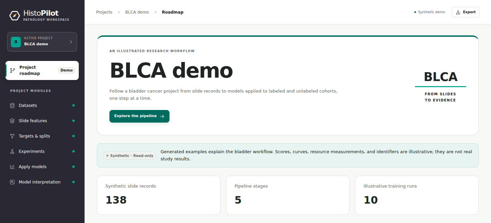
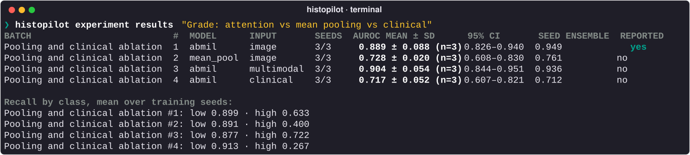
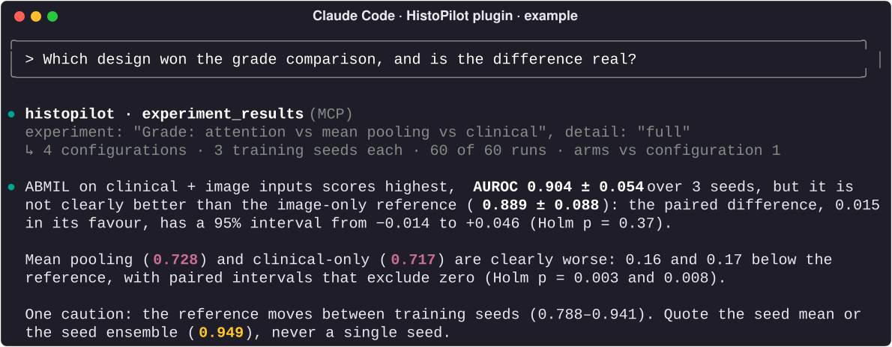

HistoPilot
Research software / computational pathology


Research into practiceThree interfaces.
Three interfaces.
One reproducible study.
Run pathology experiments through a visual workspace, scripts, or an AI assistant. Every interface shares the same versioned study records.